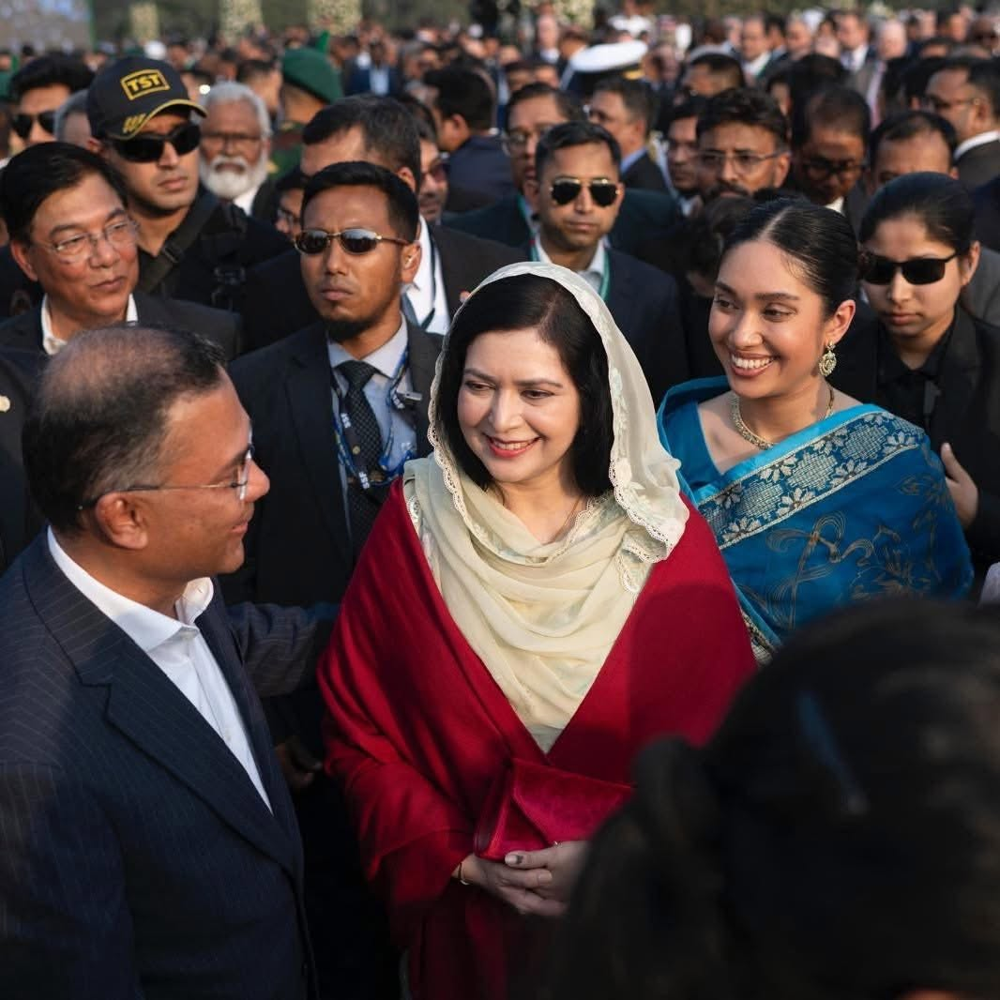

Our Vision
A generation of educated, principled and patriotic student leaders who serve the nation before self — সবার আগে বাংলাদেশ.
জাতীয়তাবাদী ছাত্রদল
One digital home for every university committee, every member profile, and every act of patriotic service — carrying forward the legacy of Shaheed President Ziaur Rahman.


The Private University Wing organises, verifies and elevates the students of Bangladesh's private universities under one transparent platform — rooted in the ideals of Bangladeshi nationalism.
A generation of educated, principled and patriotic student leaders who serve the nation before self — সবার আগে বাংলাদেশ.
To unite every private-university unit under a fair, accountable committee system that recognises merit, records service and rewards performance.
Nationalism · Democracy · Integrity · Discipline · Service. The five pillars that guide every committee and member.
Committee management, member CVs, performance grading and instant notices, built to enterprise standard.
Create, approve, renew, merge and archive committees with a full audit log and version history.
Every member gets a verified profile — credentials, positions, achievements — exportable as a Digital CV (PDF).
The central committee grades universities & members on activity, leadership, attendance and service scores.
Send notices nationally, by division, by university, or to a single member — with read receipts & push alerts.
Programmes, QR attendance, certificates and feedback — every activity recorded on the unit timeline.
Growth, rankings and engagement dashboards for national, university and faculty administrators.
Verified member badges, unique member IDs and QR digital ID cards prevent impersonation.
Super Admin, National, University & Faculty admins, members and visitors — granular permissions throughout.
From the central National Committee down to a single department, every unit is registered, verified and accountable — with clear reporting lines and its own public profile.
Browse the directoryCentral leadership · Convener & Member-Secretary
One unit per private university
School / faculty level bodies
Grass-roots unit of organisation
142 university units across all eight divisions of Bangladesh. Select a division to explore its units.
* Illustrative map — division unit counts shown for demonstration.
From the founder of the nation's independence movement to the leadership of today.
Sector commander and Z-Force leader in the 1971 Liberation War, President of Bangladesh, and founder of the Bangladesh Nationalist Party on 1 September 1978.
1936 – 1981The nation's first woman Prime Minister (1991–96, 2001–06) and long-serving Chairperson of the BNP, who led the party through decades of democratic struggle.
1945 – 2025 · In loving memoryChairman of the Bangladesh Nationalist Party and, following the 2026 general election, the Hon'ble Prime Minister of Bangladesh — carrying the movement into a new era.
Chairman · PM since 2026
The Private University Wing pays its deepest respect to the memory of Deshnetri Begum Khaleda Zia, whose courage and sacrifice for democracy will guide every generation of Chhatra Dal. Her legacy lives on in the movement she nurtured.
May her soul rest in eternal peaceThe story of Bangladeshi nationalism, the BNP and the Jatiyatabadi Chhatra Dal.
Major Ziaur Rahman broadcasts the declaration of independence from Kalurghat, Chattogram, commands Sectors 1 & 11 and raises the famed Z-Force brigade — earning the Bir Uttam gallantry award.
On 1 September 1978, President Ziaur Rahman announces the BNP at Ramna, Dhaka, built on the ideology of Bangladeshi nationalism.
On 1 January 1979 the Chhatra Dal is founded to cultivate the nation's future leaders, adopting the 19-Point Programme.
Shaheed President Ziaur Rahman is assassinated on 30 May 1981. Begum Khaleda Zia rises to lead the party.
Under Begum Khaleda Zia's uncompromising leadership, Chhatra Dal stands at the forefront of the mass uprising that ends the Ershad regime — and in 1991 she becomes the nation's first woman Prime Minister.
As private universities flourish across Bangladesh, a dedicated Private University Wing forms to organise a new generation of students.
Following a historic election victory, Chairman Tarique Rahman becomes the Hon'ble Prime Minister of Bangladesh — সবার আগে বাংলাদেশ.




Constitution, forms and guidelines for every unit and member.
An organising member submits a unit application with member details for review. Once the National Committee verifies it, the unit is created with its own public profile, notice board and member roster.
A full nationalist CV: credentials, batch, department, leadership positions, achievements, events organised, skills, awards, verification badge, unique member ID and a downloadable Digital CV in PDF.
The central committee scores each unit and member on activity, leadership, attendance, volunteering and event participation. Grades (A–D) appear on profiles and feed national rankings.
Yes. Notices can be broadcast nationally or narrowed by division, university, faculty or a specific individual — with read receipts, email and push notification.
Access is role-based (Super Admin, National, University & Faculty admins, members, visitors) with Firestore security rules, input validation, audit logs and verified identities.
Register your university unit or claim your member profile and become part of South Asia's largest student platform.
For unit registration, verification or media enquiries, write to the Private University Wing secretariat.